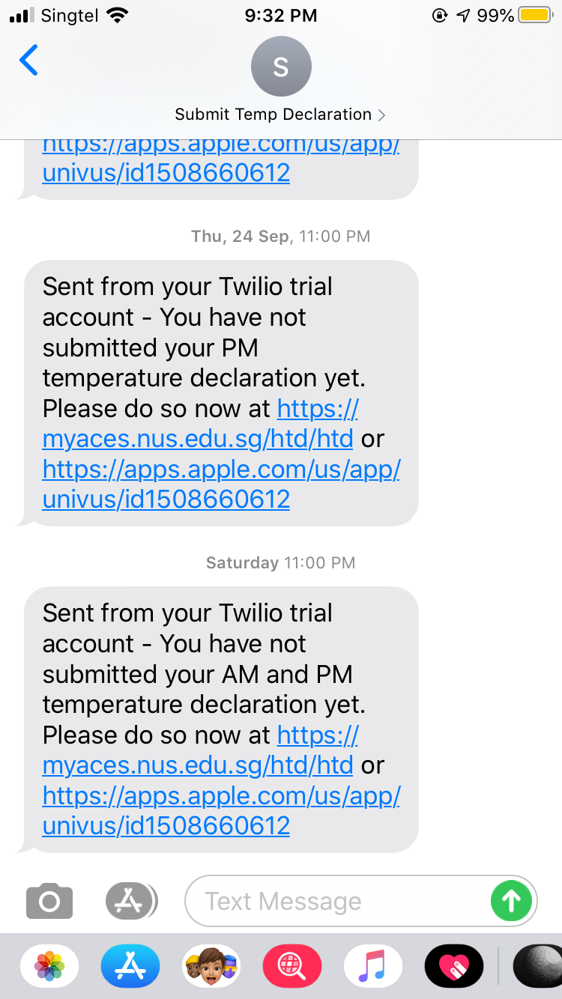
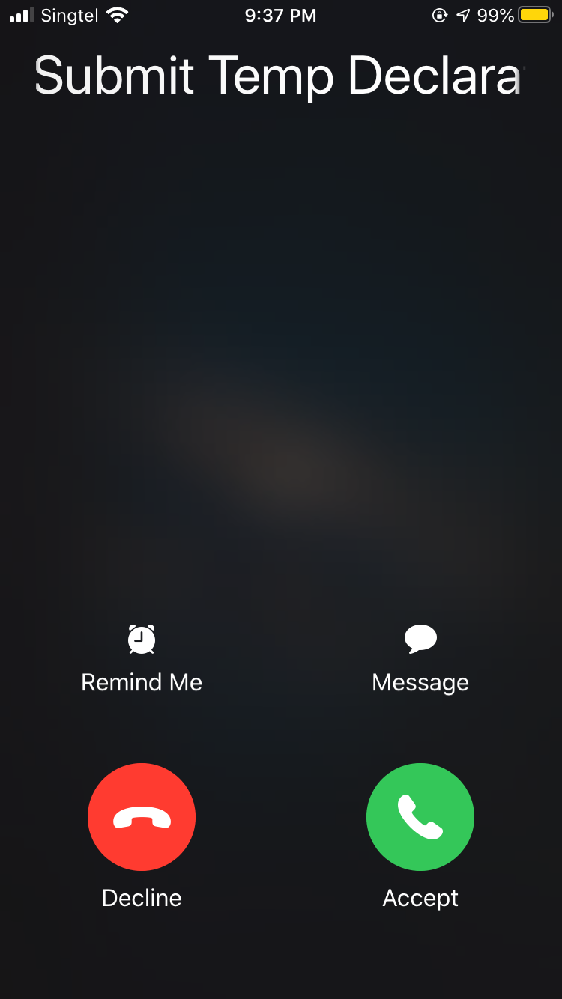

A SMS reminder service that will notify the user if they have not submitted their health and temperature declaration (HTD)
During the COVID-19 period, my school mandated temperature declarations twice a day. There were penalties involved if students kept forgetting to submit the health and temperature declaration (HTD). There were other services out there to help students remember to take their temperature (such as a Telegram channel which sent regular notifications), but that was not targeted enough (e.g. you might have seen the notification but forgot to take your temperature because it was inconvenient at that point in time). Furthermore, it is easy to get desensitized to the notifications after constantly receiving them everyday amid a lot of other Telegram messages.
I created a script in Python that checks whether the user has submitted their temperature declaration and sends them a SMS/phone call if they have not done so. It does this by sending a GET request to the declaration website and checking whether the user has submitted their temperature for that day. It sends out a SMS reminder at 11pm if the user has not done so, as well as a follow-up phone call at 11.50pm if the user still has not done so.
This way, the reminders are more sparse, because they are not sent out if the user already submitted their temperature, thus making the reminders more important when they are actually sent. Furthermore, they are sent via SMS and phone call, which is intended to be slightly more obtrusive to make sure that the user's attention is grabbed. Over time, the user will develop the good habit of taking their temperature and submitting before the reminders are sent out, reducing their reliance on the system. I programmed the service in Python using Beautiful Soup and Twilio and deployed it on Heroku.
